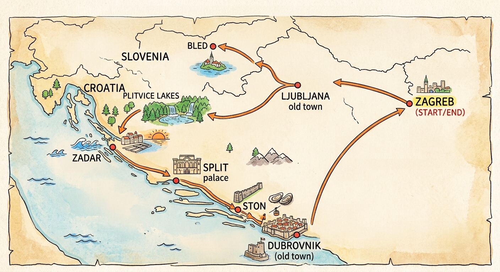

🇭🇷 & 🇸🇮 2026 亚得里亚海自驾之旅

📍 在 Google Maps 中打开完整路线地图
全部展开
全部折叠
Day 0 (10/1) 启程启航
飞行中
▼
📌 核心行程：
18:50 上海浦东 T2 ✈ CA1836 ✈ 21:25 北京首都 T3
Day 1 (10/2) 萨格勒布 → 卢布尔雅那
Ljubljana
▼
📌 核心行程：
09:55 抵达萨格勒布机场取车 → 萨格勒布老城漫步 → 自驾过境至斯洛文尼亚 → 卢布尔雅那老城游览
🏛️ Zagreb 推荐打卡点：
圣马可教堂 → 警示塔 → Funicular缆车 → 石门 → KRAVATA领带店 → Dolac Market → 札格瑞布大教堂 → 耶拉西奇广场 → 歌剧院
📷 卢布尔雅那主要景点：
1️⃣
卢布尔雅那城堡 Ljubljana Castle
：山脚下老城搭缆车 Funicular，或者徒步石阶路15分钟上山。我们是开车，有收费停车场2欧。门票：全馆通票19欧，网线上购票17.5欧。开放（5-9月）：9:00-22:00。
官网
2️⃣
普列舍伦广场 Preseren Square
：老城起点，广场中央矗立诗人普列舍伦雕像，粉色的报喜教堂为视觉中心。
3️⃣
三重桥 Triple Bridge | UNESCO普列奇尼克建筑遗产
：一主两副三座石桥，建筑师 Plecnik 的代表作，连接广场与老城河岸，两侧滨河拱廊回看桥梁全景。
4️⃣
Cobblers' Bridge
：挂满情侣锁的石砌步行桥，是拍摄河道两岸红屋顶绝佳机位。
5️⃣
Dragon Bridge飞龙桥
：城市的标志，桥头四座青铜飞龙。
6️⃣
中央农贸市场 Central Market
：由普列奇尼克设计的拱廊市集。营业时间：周二-周六 07:00-14:00。
7️⃣
市政厅 Mestni trg
：巴洛克市政厅建筑，广场设有三座喷泉。
8️⃣
蒂沃利公园 Tivoli Park
：城市免费森林公园，从普列舍伦广场步行约7分钟即达，登上Roznik 小山，俯瞰整座城市。
🍽️ 推荐餐厅合集：
🍴 谷歌地图美食品鉴清单 (Google Maps)
🚘 租车与取车信息：
租车公司：[待补充，例如 Hertz / SIXT]
订单编号：[待补充]
取车地点：萨格勒布机场 (ZAG) 柜台
注意事项：确认跨国通行费/过境卡 (Cross-Border Card)
🏨 住宿与定位：
📍 卢布尔雅那住宿 (Google Maps)
🔗 相关工具/购票：
🎫 购买斯洛文尼亚 e-Vignette 高速票
🌦 当地与实况天气：
📍 当前 IP 位置实况天气
🌦 卢布尔雅那天气
Day 2 (10/3) 布莱德湖 → 扎达尔
Zadar
▼
📌 核心行程：
驱车至布莱德湖 → 南下经过十六湖外围 → 抵达扎达尔看海风琴 &“向太阳致敬”日落
🏨 住宿与定位：
📍 扎达尔 Falkensteiner Hotel Adriana (Google Maps)
🔗 景点官网/门票：
🏰 布莱德城堡官网
🌦 当地天气：
查 布莱德湖 天气
查 扎达尔 天气
Day 3 (10/4) 扎达尔 → 斯普利特
Split
▼
📌 核心行程：
上午游览扎达尔老城 → 下午沿景观 D8 公路前往斯普利特 → 傍晚漫步戴克里先宫
🏨 住宿与定位：
📍 斯普利特地图 (Google Maps)
🌦 当地天气：
查 斯普利特 天气
Day 4 (10/5) 蓝洞 & 5 岛出海一日游
Split
▼
📌 核心行程：
全天快艇出海：毕舍沃岛 → 维斯岛 → 斯蒂尼瓦海湾 → 赫瓦尔镇
🔗 预订平台链接：
🚤 GetYourGuide 蓝洞 5 岛预订
⛵ Viator 跳岛预订
🌦 当地天气：
查 赫瓦尔岛 天气
Day 5 (10/6) 斯普利特 → 斯通 → 杜布罗夫尼克
Dubrovnik
▼
📌 核心行程：
沿 D8 海岸公路自驾 → 途经小镇斯通品尝生蚝 → 抵达杜布罗夫尼克机场还车 → 傍晚海边日落皮划艇
🏨 住宿与定位：
📍 杜布罗夫尼克地图 (Google Maps)
🌦 当地天气：
查 杜布罗夫尼克 天气
Day 6 (10/7) 杜布罗夫尼克古城深度游
Dubrovnik
▼
📌 核心行程：
网红 Brunch → 游览中世纪古城墙 & 打卡点 → 乘坐缆车/空中脚踏车登顶 Srd 山俯瞰全景
🔗 门票与体验预订：
🚡 杜布罗夫尼克缆车官网
🏰 城墙门票/讲解预订
🌦 当地天气：
查 杜布罗夫尼克 天气
Day 7 (10/8) 杜城休闲与整理
Dubrovnik
▼
📌 核心行程：
老城巷子深度漫步、挑选纪念品、海边咖啡厅放松。提前收拾行李早点休息，为次日 06:15 航班做准备。
⚠️ 选座提醒：
✈️ 记得提前48小时完成 OU661 网页值机/选座
Day 8-9 (10/9-10/10) 返程上海
返程
▼
📌 航班衔接：
· 10/9 06:15–07:10: 杜城 ✈ OU661 ✈ 萨格勒布
· 10/9 11:55: 萨格勒布 T1 ✈ CA914 ✈ 北京首都
· 10/10 10:30–12:40: 北京首都 ✈ CA1531 ✈ 上海虹桥 T2